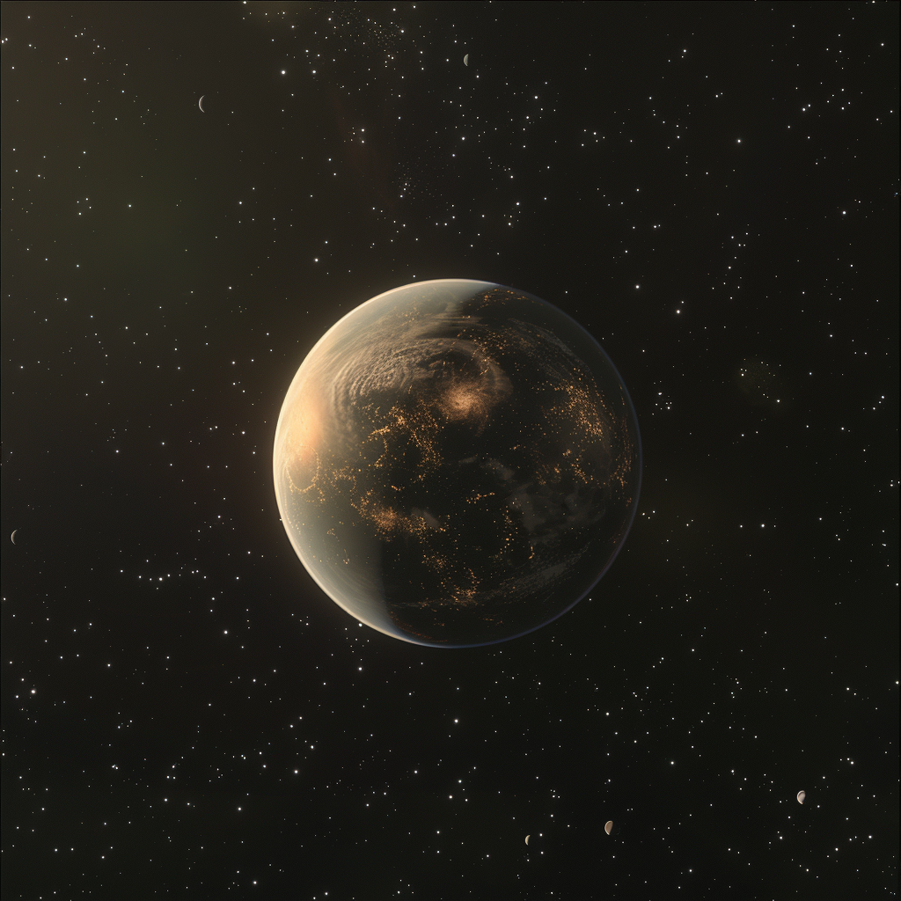

Publicationsscientifiques
Les articles de nos chercheurs, de la biologie spatiale à la propulsion, parus dans des revues internationales. Du plus récent au plus ancien.
Trouver un article

Composites céramiques pour boucliers thermiques de rentrée atmosphérique
Des panneaux exposés à plus de 2 000 °C conservent l'essentiel de leur résistance : une formulation candidate pour la future mission de retour RETOUR-I.

NK-125 : un propulseur ionique à grilles tri-étages validé à haute puissance
La campagne d'essais TORCH-IV établit une impulsion spécifique et une durée de vie inédites pour cette classe de moteur. Un jalon vers PROMETHEUS-2.

Des microbes qui se multiplient en conditions martiennes simulées
Trois espèces extrêmophiles, dont une archée inédite, continuent de croître pendant plus d'un an et demi sous le profil martien complet : froid, UV, CO₂ et régolithe salé. De la croissance, et pas seulement de la survie.

L'intrication quantique préservée sur une liaison Terre–satellite simulée
Des paires de photons intriqués distribuées avec une fidélité record malgré des pertes extrêmes. Le modèle du programme HERMES tient ses promesses.

Une super-Terre au cœur de la zone habitable d'une étoile orange
Confirmée par vitesses radiales puis observée en spectroscopie de transit, la planète reçoit presque autant de lumière que la Terre, et son atmosphère laisse déjà un signal mesurable.

Cartographie in vivo des organes lumineux d'un poisson des abysses
Une microtomographie sous très haute pression révèle la répartition des photophores du poisson-vipère Chauliodus sloani, clé de son camouflage par contre-illumination.

Limites décisionnelles des systèmes autonomes en situation ambiguë
Face à des données contradictoires, trois régimes de défaillance émergent. L'article propose un cadre de détection précoce pour les systèmes spatiaux embarqués.

Résilience microbienne en conditions extrêmes simulées
Bactéries et champignons soumis aux UV, aux pressions et aux températures de la surface martienne : trois souches résistent bien au-delà des attentes.

Détecter la vie ailleurs : un cadre théorique unifié
L'article fondateur des recherches exobiologiques de l'IFRAS réunit biosignatures chimiques, spectrales et thermodynamiques dans une même approche.
Publications antérieures à 2023
Seuls les articles récents sont consultables en ligne. Le catalogue complet de l'institut est disponible sur demande auprès du service Archives & Documentation.